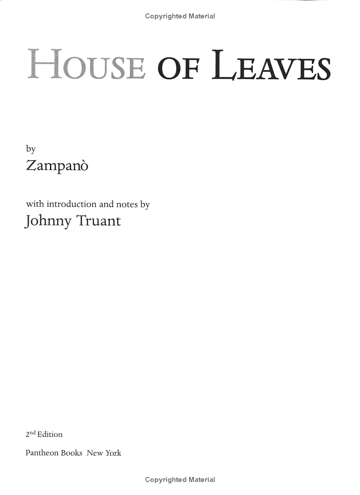
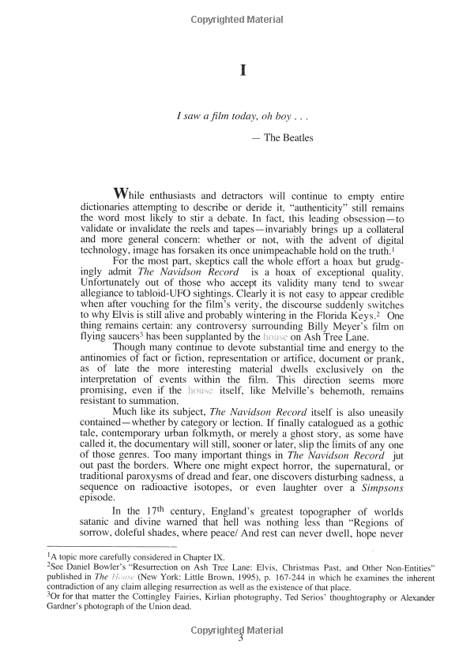
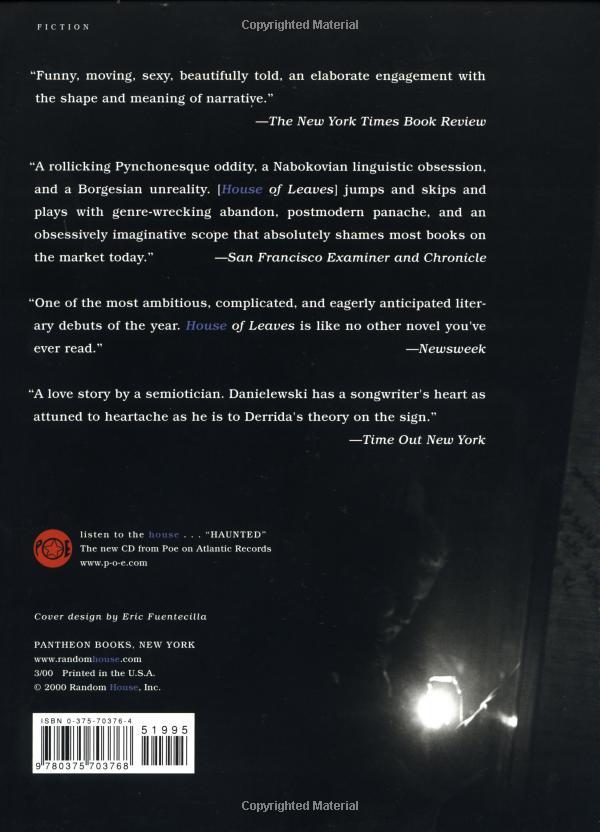

House of Leaves
Years ago, when House of Leaves was first being passed around, it was nothing more than a badly
bundled heap of paper, parts of which would occasionally surface on the Internet. No one could have
anticipated the small but devoted following this terrifying story would soon command. Starting with
an odd assortment of marginalized youth—musicians, tattoo artists, programmers, strippers,
environmentalists, and adrenaline junkies—the book eventually made its way into the hands of older
generations, who not only found themselves in those strangely arranged pages but also discovered a
way back into the lives of their estranged children.
Now made available in book form, complete with the original colored words, vertical footnotes, and second and third appendices, the story remains unchanged. Similarly, the cultural fascination with House of Leaves remains as fervent and as imaginative as ever. The novel has gone on to inspire doctorate-level courses and masters theses, cultural phenomena like the online urban legend of “the backrooms,” and incredible works of art in entirely unrealted mediums from music to video games.
Neither Pulitzer Prize-winning photojournalist Will Navidson nor his companion Karen Green was prepared to face the consequences of the impossibility of their new home, until the day their two little children wandered off and their voices eerily began to return another story—of creature darkness, of an ever-growing abyss behind a closet door, and of that unholy growl which soon enough would tear through their walls and consume all their dreams.
Now made available in book form, complete with the original colored words, vertical footnotes, and second and third appendices, the story remains unchanged. Similarly, the cultural fascination with House of Leaves remains as fervent and as imaginative as ever. The novel has gone on to inspire doctorate-level courses and masters theses, cultural phenomena like the online urban legend of “the backrooms,” and incredible works of art in entirely unrealted mediums from music to video games.
Neither Pulitzer Prize-winning photojournalist Will Navidson nor his companion Karen Green was prepared to face the consequences of the impossibility of their new home, until the day their two little children wandered off and their voices eerily began to return another story—of creature darkness, of an ever-growing abyss behind a closet door, and of that unholy growl which soon enough would tear through their walls and consume all their dreams.